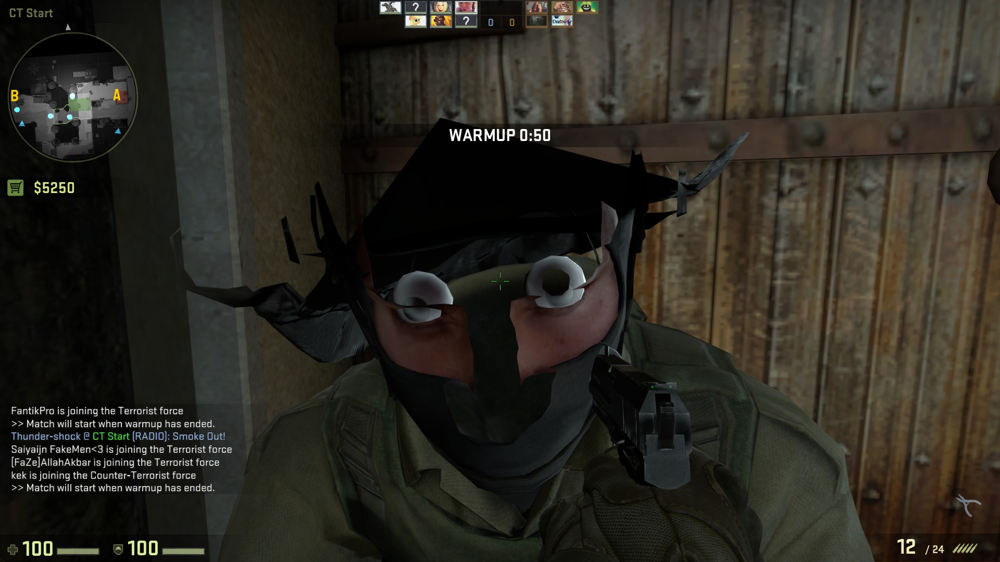

CS:GO

Skins
Skins are avaliable for all weapons features in CSGO. Skins are commodities that you can purchase or collect in game from weapon drops. They have recently added glove skins to change the appearance of your gloves.
Awards/Statistics/Achievements
You can view your own Statistics and achievements in game to see how accurate you are. You can view stats like your most played map, accurancy, favourite weapon and wins/losses.
Gamemodes- Deathmatch, Arms race, Demolition, Casual, Competitive
Deathmatch
The death match game mode involves killing as many players as you can within the time limit. Each player gives points so the person with the most points at the end wins.
Arms race
Arms race is a gamemode where you kill to upgrade your weapon and you kill with a knife to degrade your enemy's weapon. You have to upgrade in the game to the golden knife and the first person to get a kill with the golden knife wins.
Demolition
The Demolition game mode has simular rules as arms race but instead of you winning as a player you have to win as a team, In the gamemode you have to kill to upgrade your weapon but if you kill someone with a knife they won't degrade their weapon. There are no respawns in this gamemode until the round ends. You can win each round as a terrorist if you kill the entire opposing team or if you plant a bomb and defend it until it blows up, You can win each round as a counter-terrorist if you kill the entire opposing team or if you defuse a planted bomb.
Casual
In causal you play on a team and you have to win rounds to win the game. Instead of you killing to upgrade your weapon you have to buy weapons. This gamemode teaches the players the importance of handling your money when in a competitive match.
Competitive
Competitive is the ranked gamemode within the game. Each competitive game you play affects your rank. You only get one chance in a round, if you die you will not be able to respawn till the round has ended. To win the round, terrorist must either kill the opposing team or plant the bomb and have it detonate. For the counter-terrorists they must either kill the entire terrorist team or defuse the bomb before it detonates. Each round is 2;50, there are a maximum of 30 rounds in a game.
Workshop
The workshop is a community place where the community creates content for the game from skins to maps to game modes all community created content is here for you to download and use yourself or to vote upon making in the game.
Communication
Communication in the competitive gamemode is what makes the team more successful and is what makes the game even more tactical because the game almost needs good communication skills to win rounds and entire games, fast reflexes are not valuable unless you have information on where to place that skill. Call outs are very important when in a game so that your team mates know where the enemies are and where they're going.
Bomb Placement
On each map there is 2 sites, site A and site B, these are the only places that the bomb can be planted. The counter terrorists must cover theses two sites to ensure that the bomb doesn't get planted.
Tom Clancy's Ghost Recon: Wildlands
Team Building
The open world of Tom Clancy's Ghost Recon: Wildlands is a vast expansive world to play in but this world you do not walk alone, you must work as a team to fully achieve ghosting in the game. This is from multi killing your enemies all the way to taking over outposts and enemy encampments. You must all work as a team in this game to overcome the dangerous environment of the "Wildlands".
Intel
Intel in the game does effect the way you can play in the game and the overall loadouts your team must use to make the missions easier, Intel can be collected by team mates and thier devices. The way you look out for information or provide information to your team mates will greatly affect all the players gameplay style from stealth to all out combat.
Weapon Loadout
Weapon loadout is the most important part to the gameplay of this game because the loadout of your weapons will greatly affect the players capabilities and thier ability to handle situations. The weapons themselves have different levels of penetration and how much damage they can inflict on people and vehicles, the penetration levels also affect what things you can shoot through within the game.
Open World Transversing
From climbing mountains to crawling in bushes and jumping out of windows there is truely a lot of ways to manoeuvre throughout the world. This truely affects the way you play because some obstacles manoeuvres are more noticable than overs and these manoeuvres can be spotted by enemies and reveal your position and it might also reveal your team mates as well depending on the situation.
Vehicle Utilisation
Vehicle Utilisation, some vehicles are best used in cirtain situations like transportation for example to begin with. Normal cars and trucks are a great way to transverse the environment on land but there are many Normal cars and trucks that provide better protection at the cost of maneuverability and other Normal cars and trucks that provide better maneuverability at the cost of pritection. There is one Vehicle that is more suited to combat which is the tank that provides the most protection and offensive weapons but at a serious cost of maneuverability. Boats and Helicopters on the other hand do not provide a lot of verication and they are only used to transverse a specific type of terrain like water and the sky.
Device Utilisation
At the beginning of the game, the drone is usually very low on battery charge and disconnects pretty quickly. That’s why you need to upgrade it in your skills tree -- especially the battery life, cooldown time and range. Range is important, since it allows you to stay relatively far away from the enemy lines and still do your job. The last skill you need to unlock is noise reduction -- because as helpful as it is, the little bugger can be so noisy at times that it alerts your enemies.
World of Warcraft: Legion
New demon hunter class
The demon hunter class is one of the new additions to world of Warcraft, similar to the death knights they have a similar starting experience. When you start a demon hunter character theory do not start at level 1 like the other classes but start at level 98, only 12 levels away from the level 110 cap. The demon hunter can be played as a DPS and a tank, depending on the chosen specification.
Mythic+ dungeons
Mythic plus dungeons have been added to the game, this making it the highest difficulty, this gives the players the opportunity to acquire high level gear.
Order halls
Order halls have been added replacing garrisons, order halls are for all players of the same class to visit, these halls contain access to your artifact weapon tree, to unlock traits and access to the missions board, which you can use to send your obtained followers on missions to collect rewards.
Artifact weapons
Artifact weapons have been added for each class, each class will have access to weapons for each spec. You can unlock new traits for your character and weapon by collecting artifact power which is given from quests, dungeons and raids.
Patch 7.2
The upcoming patch will include flying in legion areas like broken isles, there's is also going to be level 110 class mounts for all classes.